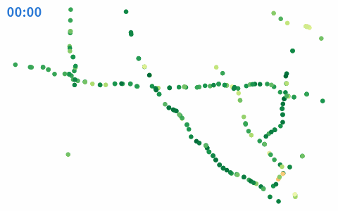

Li et al. (2018). 로스앤젤레스 고속도로 루프 센서 207개의 5분 간격 평균 속도 (mph), 2012년 3~6월. 센서 위치 · 도로 거리로 만든 연결 그래프 포함 (Hugging Face witgaw/METR-LA, 시험 기간 2012-06-04 ~ 06-27 만 받는다)

| node_id | t0_timestamp | speed_mph |
|---|---|---|
| 53 | 2012-06-10T09:40:00 | 65.88 |
| 46 | 2012-06-11T13:00:00 | 62 |
| 117 | 2012-06-13T02:40:00 | 59.62 |
| 61 | 2012-06-11T20:55:00 | 66.56 |
| 13 | 2012-06-19T16:45:00 | 67 |
| 139 | 2012-06-23T19:15:00 | 67.89 |
| 열 | 종류 | 빈칸 | 고유값 수 | 범위 · 대표값 |
|---|---|---|---|---|
| node_id | 숫자 | 0 | 207 | 0 ~ 206 (평균 103) |
| time | 날짜 | 0 | 6850 | 2012-06-04 04:10:00 ~ 2012-06-27 22:55:00 |
| speed_mph | 숫자 | 0 | 2045 | 0 ~ 70 (평균 50.77) |
출퇴근 시간에 푹 꺼진다 (빈 곳은 센서 고장)
| ① 한 행 | 센서 × 5분 |
| ② 입력 X | 그 센서의 지난 1시간 속도 + 이웃 센서 속도 + 시각 |
| ③ 출력 y | 15분 뒤 속도 (mph) |
| ④ 평가지표 | MAE (mph), 막힘 (< 40 mph) 재현율 |
| ⑤ 기준선 | 지금 속도 그대로 |
문제를 정할 때 처음 채워 보는 칸들입니다. 여기서 끝이 아니라, 시험 데이터를 어떻게 나눌지 · 틀렸을 때 손해가 얼마인지 · 예측 시점에 정말 알 수 있는 값인지 같은 칸을 더 붙일수록 좋은 문제가 됩니다.
now MAE 3.29 mph jam (<40) recall 82% own past hour + time MAE 3.15 mph jam (<40) recall 80% + neighbours MAE 3.17 mph jam (<40) recall 80%
누가, 왜, 어떻게 만든 데이터인지 직접 확인해 보세요.
인턴 · 산학협력 · 프로젝트 주제를 고를 때 참고하세요 (일반적인 예시).